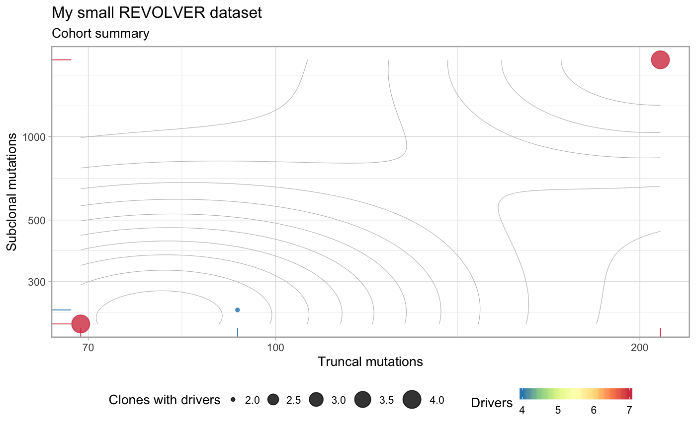
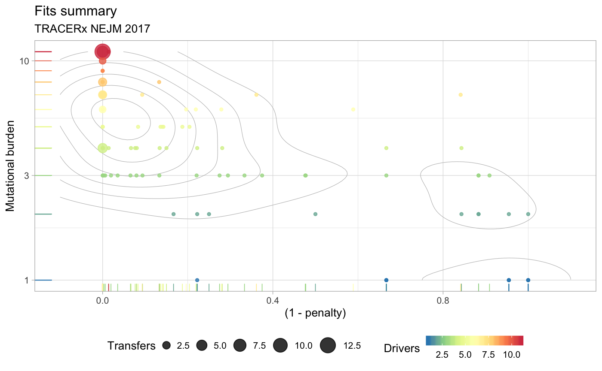

vignettes/Input_formats.Rmd
Input_formats.RmdData from a cohort of patients can be represented as a dataframe with at least 7 columns, where every row represents one genomic alteration annotated for the analysis.
| Field | Type | Description |
|---|---|---|
Misc |
string | Customary annotation which is never used to analyse the data, but that might be good to carry around |
patientID |
string | A patient identifier |
variantID |
string | An alteration identifier |
cluster |
string | Group ID (eg., a clone, with CCF data) |
is.driver |
logical | TRUE if the alteration is a driver to correlate when repeated trajectores are extracted |
is.clonal |
logical | TRUE if the alteration belongs to the group of clonal (truncal) events; there should only one such clonal group per patient |
CCF |
string | A parsable format for storage of input CCFs or binary data (see below) |
All identifiers cannot contain spaces or dash/ hyphen (-) symbols, and must be unique:
the patientID must be unique across patients;
the variantID for driver events (those with is.driver = TRUE) must be shared across all patients that have the same driver event, and cannot appear multiple times in the data of a single patient. Notice that you should not annotate an alteration as driver if it is not found in multiple patients.
the variantID for non-driver events (those with is.driver = FALSE) is in practice never used and therefore can be set freely.
Notice that the input dataframe has the same structure for both CCF and binary input data.
The scope of supported alterations is broad, and include any SNV, larger chromosomal re-arrangment or other covariate that can be encoded in CCF or binary format.
The variantID field of driver alterations (is.driver=TRUE) will be matched to correlate trajectories in multiple patients, and can be you whatever you find more suitable for your analysis, for instance:
a Hugo_Symbol (BRAF)
a name for a well-known SNV (BRAF_600E)
a reference to some cytoband (3q26.32)
your custom annotation (MyFavoritePathway).
Alterations are also associated to groups (via cluster), which constitute the nodes of the computed trees. A group can have 0 drivers annotated, but every patient should have at least one driver to be analyzed with REVOLVER.
See also the Frequently Asked Questions if you are interested in modelling parallel evolution.
Field CCF represents data from both types of supported datasets:
real-valued CCF values (in [0, 1]),
or input binary values (either 0 or 1).
Since patients can have different number of samples/ regions associated, CCF is a general string.
The format that we propose is simple, and easy to parse it:
# Example string that reports a CCF value 0.86 in region R1, 1 in R2 etc.
R1:0.86;R2:1;R3:1
# Similarly, in binary presence/ absence format ...
R1:0;R2:1;R3:1If you use this format, REVOLVER provides you a parsing function that you can pass to the cohort construction function
An example cohort is released in the evoverse.datasets R package, which also provides a REVOLVER objectwith the final analysis of the input cohort.
# Load the package and runs available_data() to print what is available
library(evoverse.datasets)
#>
#> Available datasets ~ use data('xxx', package='REVOLVER_datasets') to load dataset 'xxx'
#>
#> ◉ TRACERx_NEJM_2017 Mutations from TRACERx lung (NEJM2017, PMID: 28445112). n = 99 patients, multi-region WES.
#> ◉ TRACERx_NEJM_2017_REVOLVER REVOLVER analysis of TRACERx_NEJM_2017.
# Load an example dataset - the TRACERx cohort
data("TRACERx_NEJM_2017", package = "evoverse.datasets")
# This is a dataset that follows the specifications given above
print(TRACERx_NEJM_2017)
#> # A tibble: 65,421 x 7
#> Misc patientID variantID cluster is.driver is.clonal CCF
#> <chr> <chr> <chr> <chr> <lgl> <lgl> <chr>
#> 1 CRUK0001:7:4… CRUK0001 PKD1L1 1 FALSE FALSE R1:0.86;R…
#> 2 CRUK0001:21:… CRUK0001 PCNT 1 FALSE FALSE R1:0.86;R…
#> 3 CRUK0001:22:… CRUK0001 CSF2RB 1 FALSE FALSE R1:0.86;R…
#> 4 CRUK0001:10:… CRUK0001 KAZALD1 1 FALSE FALSE R1:0.86;R…
#> 5 CRUK0001:7:8… CRUK0001 CACNA2D1 1 FALSE FALSE R1:0.86;R…
#> 6 CRUK0001:1:2… CRUK0001 IPO9 1 FALSE FALSE R1:0.86;R…
#> 7 CRUK0001:3:1… CRUK0001 PDCD10 1 FALSE FALSE R1:0.86;R…
#> 8 CRUK0001:7:1… CRUK0001 CALD1 1 FALSE FALSE R1:0.86;R…
#> 9 CRUK0001:17:… CRUK0001 CANT1 1 FALSE FALSE R1:0.86;R…
#> 10 CRUK0001:16:… CRUK0001 IFT140 1 FALSE FALSE R1:0.86;R…
#> # … with 65,411 more rowsOnce you have a dataframe/ tibble in the required format, you can use a cohort construction function.
In this case, to make it faster we only use 3 patients from the released cohort.
require(tidyverse)
require(revolver)
#> Loading required package: revolver
#> Warning: replacing previous import 'igraph::%s%' by 'matrixcalc::%s%' when
#> loading 'ctree'
#> Warning: replacing previous import 'igraph::groups' by 'tidygraph::groups'
#> when loading 'ctree'
#> [ ctree - Clone Trees in cancer ]
#> Author : Giulio Caravagna <gcaravagn@gmail.com>
#> GitHub : caravagn/ctree
#> Warning: replacing previous import 'dendextend::theme_dendro' by
#> 'ggdendro::theme_dendro' when loading 'revolver'
#> Warning: replacing previous import 'dendextend::rotate' by 'ggpubr::rotate'
#> when loading 'revolver'
#> Warning: replacing previous import 'igraph::groups' by 'tidygraph::groups'
#> when loading 'revolver'
#> [ REVOLVER - Repeated Evolution in Cancer ]
#> Author : Giulio Caravagna <gcaravagn@gmail.com>
#> GitHub : caravagn/revolver
#>
#> Attaching package: 'revolver'
#> The following object is masked from 'package:igraph':
#>
#> plot_dendrogram
subset_data = TRACERx_NEJM_2017 %>%
filter(patientID %in% c("CRUK0001", "CRUK0002", "CRUK0003"))
# Create a cohort
my_cohort = revolver_cohort(
subset_data,
CCF_parser = CCF_parser,
ONLY.DRIVER = FALSE,
MIN.CLUSTER.SIZE = 0,
annotation = "My small REVOLVER dataset"
)
#> [ REVOLVER Cohort constructor ]
#> ◉ Use only drivers 1
#> ◉ Reject clusters with size below 0
#>
#> =-=-=-=-=-=-=-=-=-=-=-
#> REVOLVER input data
#> =-=-=-=-=-=-=-=-=-=-=-
#> # A tibble: 2,710 x 9
#> Misc patientID variantID cluster is.driver is.clonal CCF id
#> <chr> <chr> <chr> <chr> <lgl> <lgl> <chr> <chr>
#> 1 CRUK… CRUK0001 PKD1L1 1 FALSE FALSE R1:0… __mu…
#> 2 CRUK… CRUK0001 PCNT 1 FALSE FALSE R1:0… __mu…
#> 3 CRUK… CRUK0001 CSF2RB 1 FALSE FALSE R1:0… __mu…
#> 4 CRUK… CRUK0001 KAZALD1 1 FALSE FALSE R1:0… __mu…
#> 5 CRUK… CRUK0001 CACNA2D1 1 FALSE FALSE R1:0… __mu…
#> 6 CRUK… CRUK0001 IPO9 1 FALSE FALSE R1:0… __mu…
#> 7 CRUK… CRUK0001 PDCD10 1 FALSE FALSE R1:0… __mu…
#> 8 CRUK… CRUK0001 CALD1 1 FALSE FALSE R1:0… __mu…
#> 9 CRUK… CRUK0001 CANT1 1 FALSE FALSE R1:0… __mu…
#> 10 CRUK… CRUK0001 IFT140 1 FALSE FALSE R1:0… __mu…
#> # … with 2,700 more rows, and 1 more variable: cluster_size <int>
#>
#> =-=-=-=-=-=-=-=-=-=-=-=-=-=-=-=-=-=-=-=-=-=-=-=-=-=-=-=-=-=-=-=-
#> Extracting dataset for each patient (this may take some time)
#> =-=-=-=-=-=-=-=-=-=-=-=-=-=-=-=-=-=-=-=-=-=-=-=-=-=-=-=-=-=-=-=-
#>
#> CRUK0001 2100 entries
#>
#> CRUK0002 280 entries
#>
#> CRUK0003 330 entries
#>
#> =-=-=-=-=-=-=-=-=-=-=-=-=-=-=-=-=-=-=-=-=-=-
#> Extracting clones' table for each patient
#> =-=-=-=-=-=-=-=-=-=-=-=-=-=-=-=-=-=-=-=-=-=-
#> CRUK0001 2100 entries --> 11 clones
#> CRUK0002 280 entries --> 7 clones
#> CRUK0003 330 entries --> 7 clones
# This is now a REVOLVER cohort with S3 methods available
print(my_cohort)
#> [ REVOLVER - Repeated Evolution in Cancer ]
#>
#> Dataset : My small REVOLVER dataset
#> Cohort : 3 patients, 2710 variants and 16 driver events.
#>
#> Trees per patient : NO
#> Fit via TL : NO
#> REVOLVER clustering : NO
#> Jackknife statistics : NO
#>
#> For summary statistics see `?Stats_*(x)` with * = {cohort, drivers, trees, fits, clusters, ...}
#>
#>
#> ERROR Some driver variantIDs occur only once and should therefore be removed.
#>
#> You can use `revolver::Stats_drivers(x)` to retrieve them.
#> # A tibble: 14 x 7
#> variantID numClonal p_clonal numSubclonal p_subclonal N_tot p_tot
#> <chr> <dbl> <dbl> <dbl> <dbl> <dbl> <dbl>
#> 1 TP53 1 0.333 0 0 1 0.333
#> 2 MGA 1 0.333 0 0 1 0.333
#> 3 WRN 1 0.333 0 0 1 0.333
#> 4 MET 1 0.333 0 0 1 0.333
#> 5 TERT 1 0.333 0 0 1 0.333
#> 6 PIK3CA 1 0.333 0 0 1 0.333
#> 7 CDKN2A 1 0.333 0 0 1 0.333
#> 8 ARHGAP35 0 0 1 0.333 1 0.333
#> 9 PASK 0 0 1 0.333 1 0.333
#> 10 RB1 0 0 1 0.333 1 0.333
#> 11 IKZF1 0 0 1 0.333 1 0.333
#> 12 KRAS 0 0 1 0.333 1 0.333
#> 13 EP300 0 0 1 0.333 1 0.333
#> 14 CTNNB1 0 0 1 0.333 1 0.333
plot(my_cohort)
The cohort is now ready to be inspected and analysed (note that since we only used 3 patients a warning is raised to mention that the cohort contains drivers annotated which are not really recurrent and that, therefore, should be removed; if you construct the cohort object with the full set of 99 patients that warning will vanish).
# Load a full cohort - the TRACERx cohort
data("TRACERx_NEJM_2017_REVOLVER", package = "evoverse.datasets")
# We can use S3 object functions to retrieve simple information about the cohort.
# The `print` functions runs also the `revolver_check_cohort` function which
# tells us that some patient have only 1 clone with drivers, and therefore they
# can just be expanded.
print(TRACERx_NEJM_2017_REVOLVER)
#> [ REVOLVER - Repeated Evolution in Cancer ]
#>
#> Dataset : TRACERx NEJM 2017
#> Cohort : 99 patients, 450 variants and 79 driver events.
#>
#> Trees per patient : YES
#> Fit via TL : YES
#> REVOLVER clustering : YES
#> Jackknife statistics : YES
#>
#> For summary statistics see `?Stats_*(x)` with * = {cohort, drivers, trees, fits, clusters, ...}
#>
#>
#> WARNING Some patients have only one clone with drivers, and therefore they will just be expanded.
#> # A tibble: 54 x 7
#> patientID numBiopsies numMutations numDriverMutati… numClonesWithDr…
#> <chr> <int> <int> <int> <int>
#> 1 CRUK0007 2 3 3 1
#> 2 CRUK0010 2 3 3 1
#> 3 CRUK0012 2 1 1 1
#> 4 CRUK0018 4 4 4 1
#> 5 CRUK0019 2 1 1 1
#> 6 CRUK0021 2 4 4 1
#> 7 CRUK0025 3 3 3 1
#> 8 CRUK0026 2 4 4 1
#> 9 CRUK0028 2 2 2 1
#> 10 CRUK0029 6 4 4 1
#> # … with 44 more rows, and 2 more variables: numTruncalMutations <int>,
#> # numSubclonalMutations <int>
# Plot
plot(TRACERx_NEJM_2017_REVOLVER)